-
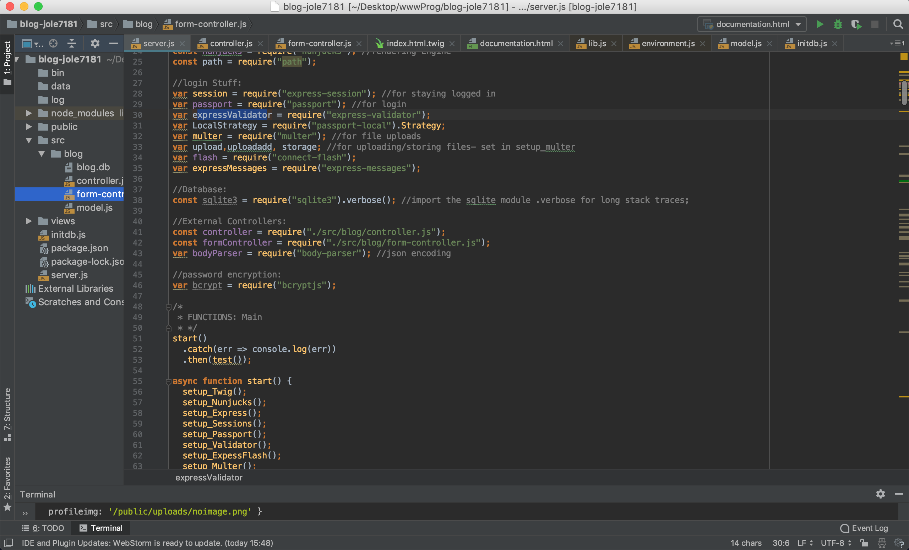
Chapter 01:
Einleitung:
Im folgenden Dokumentiere ich die Erstellung dieses Blogs. Der Blog ist von mir (Jonas Leonhard, jole7181, 611179) in einzel Arbeit erstellt worden.
-
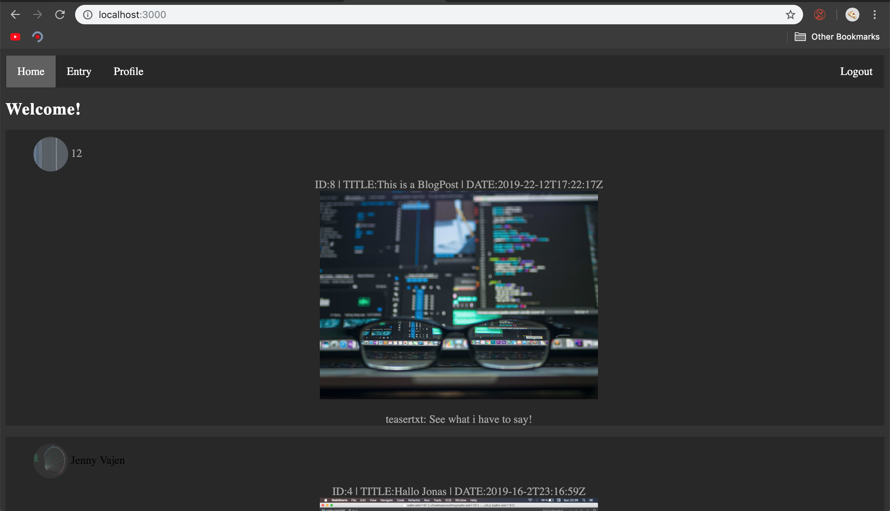
Chapter 02:
Ziel und Funktionsumfang der Anwendung
Das Ziel der Anwendung ist es einen Blog ähnlich tumblers zu
erstellen, dabei soll es unter anderem möglich sein einen Account zu
registrieren, sich einzuloggen, einen Blogpost zu erstellen.
Außerdem sollen eigene Blogposts gelöscht oder geändert, und Kommentare auf Blog Posts hinterlassen werden können.
User Können sich einloggen, Registrieren, Blogposts Verfassen, Bilder hochladen und Kommentare auf Blogposts Hinterlassen. Sie können zudem ihre eigenenen Blogposts löschen oder ändern und ein Profilbild hochladen. Man kann sich ausloggen und kann sich zwar inhalte anschauen, aber keine erstellen, löschen oder verändern. Die Navigationsleiste verändert sich von eingeloggt zu ausgeloggt. Man kann Profile von anderen Usern betrachten.
Außerdem sollen eigene Blogposts gelöscht oder geändert, und Kommentare auf Blog Posts hinterlassen werden können.
User Können sich einloggen, Registrieren, Blogposts Verfassen, Bilder hochladen und Kommentare auf Blogposts Hinterlassen. Sie können zudem ihre eigenenen Blogposts löschen oder ändern und ein Profilbild hochladen. Man kann sich ausloggen und kann sich zwar inhalte anschauen, aber keine erstellen, löschen oder verändern. Die Navigationsleiste verändert sich von eingeloggt zu ausgeloggt. Man kann Profile von anderen Usern betrachten.
-
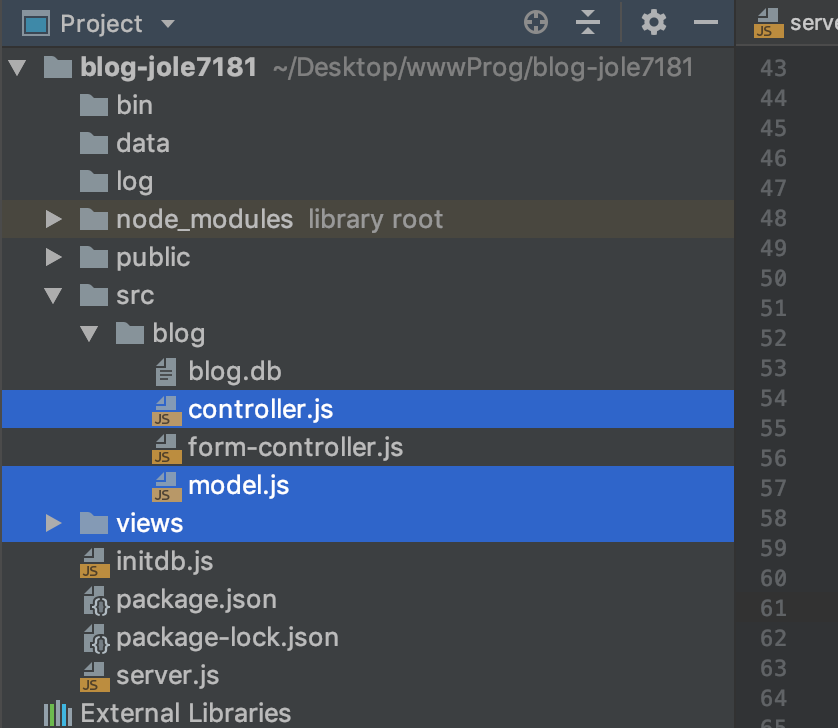
Chapter 03:
Aufbau der Anwendnung
Die Anwendung ist nach einem Front-Controller Prinzip
aufgebaut. Dabei sollen die Verwaltung der Datenbank (das model.js)
klar von der des Views (html,css) und der des
Controllers (Aufbereitung der Daten in
controller.js/frontcontroller.js) getrennt sein.
Die Application startet durch aufrufen von node server.js. Server.js initialisiert zuerst den Server, dann die Middleware und ist danach für das Routing, Erkennen des Uploading, Authentification zuständig. Je Nach Routing ruft der Server die Jeweiige Funktion des Controllers auf. Der Controller behandelt die Aufbereitung und das Speichern der Daten, sowie die Weiterleitung an das Model oder den Form-Controller. Jede Route des Servers hat eine Funktion im Controller, die Daten in das Model schreibt oder die jeweilig Aufgerufene Seite aufbereitet rendert. Der Form-Controller behandelt Login-, Entry- und das Register- Formular. Dabei überprüft er Eingegebene Daten und ruft danach Methoden des Models auf um die Daten zu Speichern. Das Model interagiert mit der Datenbank. Es erzeugt unter anderem neue User, ruft Posts auf, ändert User oder Posts und mehr. Nachdem die Daten vom Controller/Form-Controller aufbereitet wurden, wird die Render Methode im Controller aufgerufen, die mittels templating Engine (Twig) die Aufbereiteten Daten als View darstellt.
Die Application startet durch aufrufen von node server.js. Server.js initialisiert zuerst den Server, dann die Middleware und ist danach für das Routing, Erkennen des Uploading, Authentification zuständig. Je Nach Routing ruft der Server die Jeweiige Funktion des Controllers auf. Der Controller behandelt die Aufbereitung und das Speichern der Daten, sowie die Weiterleitung an das Model oder den Form-Controller. Jede Route des Servers hat eine Funktion im Controller, die Daten in das Model schreibt oder die jeweilig Aufgerufene Seite aufbereitet rendert. Der Form-Controller behandelt Login-, Entry- und das Register- Formular. Dabei überprüft er Eingegebene Daten und ruft danach Methoden des Models auf um die Daten zu Speichern. Das Model interagiert mit der Datenbank. Es erzeugt unter anderem neue User, ruft Posts auf, ändert User oder Posts und mehr. Nachdem die Daten vom Controller/Form-Controller aufbereitet wurden, wird die Render Methode im Controller aufgerufen, die mittels templating Engine (Twig) die Aufbereiteten Daten als View darstellt.
-
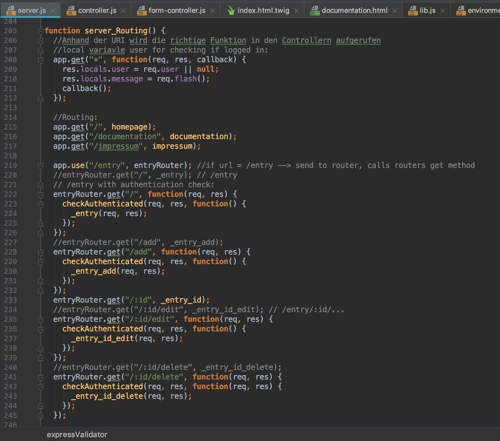
Chapter 04:
URIs und Aufgabenteilung der Anwendung
Das Routing der URIs erfolgt mittels Express Middleware get/post, welches die
jeweilige Methode des Controllers zur Aufbereitung der Daten
aufruft. Dieser gibt die Aufbereiteten Daten an verschiedene Views
mittels Twig Templating Engine. Diese Aufgabenteilung ermöglicht
gewisse grundsicherheiten, weil der Controller nicht das Model
gleichzeitig steuert, und diese getrennt von einander arbeiten. Die
Haupt Routen sind /entry und /user, sowie /documentation und
/impressum. /entry und /user besitzen weitere subrouten.
Unter /entry/id findet man einen Blogpost mittels der blogpost id. Dort kann man den Blogpost kommentieren, oder bearbeiten und löschen, sofern man der Ersteller des Postes ist.
Unter /entry/id/edit lässt sich ein post bearbeiten. Bei dieser Route handelt es sich um eine Post Methode die nur erreicht werden kann, sofern man der Ersteller des Postes von /entry/id ist und dort auf bearbeiten klickt.
Unter /entry/add lässt sich ein Blogpost erstellen, sofern man als User eingeloggt ist.
Unter / werden alle Blogpost angezeigt. Der neuste Post wird oben Angezeigt.
Unter /user/get/id wird das Profil eines Users mittels der Userid angezeigt.
Unter /user/login kann sich ein bereits registrierter Nutzer einloggen.
Unter /user/register kann sich ein neuer Nutzer registrieren
Unter /entry/id findet man einen Blogpost mittels der blogpost id. Dort kann man den Blogpost kommentieren, oder bearbeiten und löschen, sofern man der Ersteller des Postes ist.
Unter /entry/id/edit lässt sich ein post bearbeiten. Bei dieser Route handelt es sich um eine Post Methode die nur erreicht werden kann, sofern man der Ersteller des Postes von /entry/id ist und dort auf bearbeiten klickt.
Unter /entry/add lässt sich ein Blogpost erstellen, sofern man als User eingeloggt ist.
Unter / werden alle Blogpost angezeigt. Der neuste Post wird oben Angezeigt.
Unter /user/get/id wird das Profil eines Users mittels der Userid angezeigt.
Unter /user/login kann sich ein bereits registrierter Nutzer einloggen.
Unter /user/register kann sich ein neuer Nutzer registrieren
-
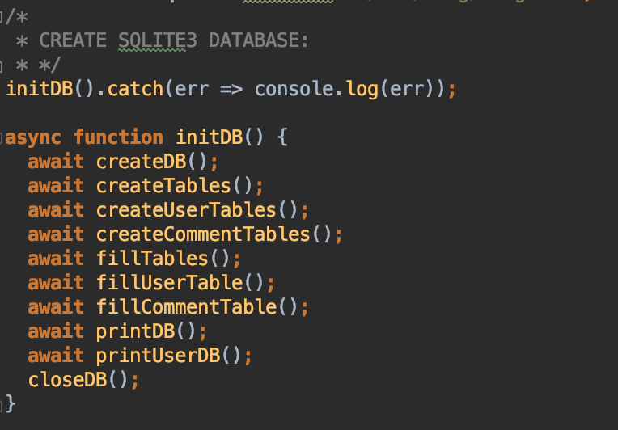
Chapter 05:
Aufbau der Datenbank
Die Datenbank besitzt folgende Tabllen:
post( title, blogText,publishDate, teaserText, username, postimg)
user( name, username, email, password, profileimg)
comment( postid, userid,comment)
Das Model.js greift mittels verschiedener Funktionen auf diese Datenbank zu. Registriert man sich beispielsweise, so ruft der Controller die Funktion createUser() des Models auf. Dieses bekommt per post Methode die Form Daten, und encrypted das Password mittels Bcrypt. Danach läuft die Sqlite Database den SQL Befehl für das Speichern der Daten. Weitere Methoden des Models sind beispielsweise changePost() oder getCommentsByPostId(). Auch die anderen Methoden bekommen vom Controller die Funktions Attribute und ändern, erstellen oder rufen Daten der Datenbank ab.
post( title, blogText,publishDate, teaserText, username, postimg)
user( name, username, email, password, profileimg)
comment( postid, userid,comment)
Das Model.js greift mittels verschiedener Funktionen auf diese Datenbank zu. Registriert man sich beispielsweise, so ruft der Controller die Funktion createUser() des Models auf. Dieses bekommt per post Methode die Form Daten, und encrypted das Password mittels Bcrypt. Danach läuft die Sqlite Database den SQL Befehl für das Speichern der Daten. Weitere Methoden des Models sind beispielsweise changePost() oder getCommentsByPostId(). Auch die anderen Methoden bekommen vom Controller die Funktions Attribute und ändern, erstellen oder rufen Daten der Datenbank ab.
-
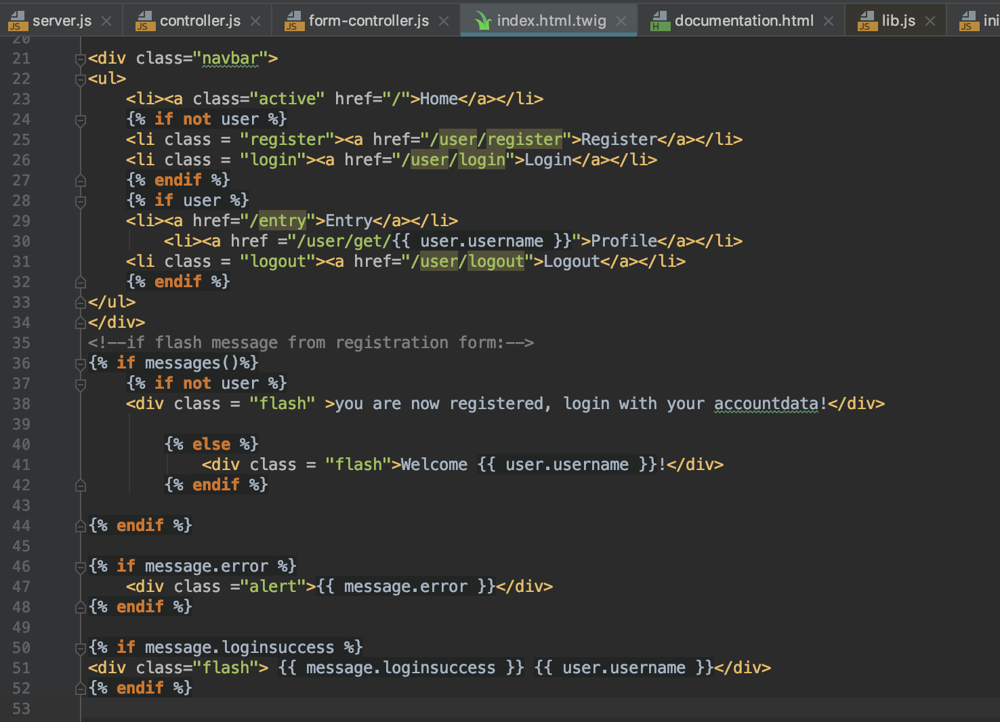
Chapter 06:
Nutzung von JS im Frontend
Für die Nutzung von Javascript im Frontend benutze ich die
Templating Engine Twig. Dabei werden variable Namen (wie der
Seitentitel) oder die Variablen Inhalte (Blogposts und Profile) vom
Backend an das Frontend übergeben und dort dargestellt. Zusätzlich
benutze ich Flash Messages für die Darstellung von Fehler/Erfolg Meldungen.
Desweiteren wird vom Backend übergeben ob der Benutzer (if user) der Website
eingeloggt ist oder nicht. Dementsprechen wechselt die
Navigationsleiste von Login und Register zu Entry, Profile und
Logout.
-
Chapter 07:
Progressive Enhancement
Damit die Website auch ohne Javascript erreichbar ist generiere ich
alle Inhalte im Backend, die Darstellung erfolgt legdiglich durch
das Frontend. Keine Scripte sind direct an den View angebunden.
-
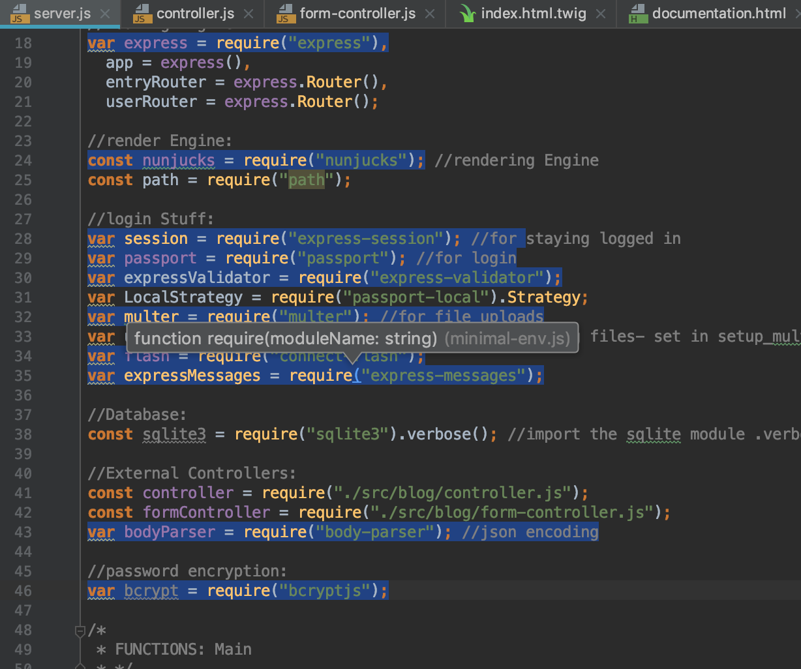
Chapter 08:
Besonderheiten, Probleme und Lösungen
Bei der Erstellung der Website traten einige verschiedene Probleme auf. Für die Lösung dieser Probleme nutze ich größtenteils Middleware, die
mir sowohl Zeit spart bei der Implementierung des Codes (was den Zeitlichen Rahmen sprengen würde), und diesen auch sicherer gestaltet weil diese Packete weniger Fehler anfällig sind als
eigens Implementierter Code. Als web application Frameword benutze ich Express, mit Nunjucks als Rendering Engine. Express wird dann mit
verschiedener Middleware erweitert. Zusätzlich benutze ich Twig als templating Engine für Javascript im Frontend.
Als Middleware benutze ich Passport zur Authentification von Usern (login) und Express-Session für das Speichern des Users in den
Cookies.
Mittels Express-Validator überprüfe ich die Input Forms im Form-Controller auf fehlerhaften Input.
Multer wird zum Upload von Dateien benutzt.
Flash sowie Express-Messages für flash Nachrichten.
Einen Body Parser für das body Encoden in json format.
Bcrypt für encrypted password in der Sqlite Datenbank.
Das Erste Problem ist die Erstellung der Datenbank, diese sollte komplett getrennt von der Website erfolgen, damit der Server die Datenbank nicht löschen kann. Deshalb ist dieser Teil ausgelagert in initdb.js, welches bei einmaligen ausführen die Datenbank initialisiert.
 Ein weiteres Problem war das uploaden von Dateien. Für das Uploaden benutze ich Multer Middleware. Dieses hängt nach initialisieren ein
file /(s) object an das request objekt. Es benötigt dafür enctype="multipart/form-data in der post/get Methode des upload Forms.
Damit nur Bilder Hochgeladen werden können, ruft das upload Objekt Multers die filefilter funktion als Callback auf, die meine Methode checkFileType aufruft.
Diese Methode checkt den Mimetype und den extension name des request.file Objekts, und liefert true zurück, wenn es sich um "filetypes = /jpeg|jpg|png|gif/" handelt.
Ein weiteres Problem war das uploaden von Dateien. Für das Uploaden benutze ich Multer Middleware. Dieses hängt nach initialisieren ein
file /(s) object an das request objekt. Es benötigt dafür enctype="multipart/form-data in der post/get Methode des upload Forms.
Damit nur Bilder Hochgeladen werden können, ruft das upload Objekt Multers die filefilter funktion als Callback auf, die meine Methode checkFileType aufruft.
Diese Methode checkt den Mimetype und den extension name des request.file Objekts, und liefert true zurück, wenn es sich um "filetypes = /jpeg|jpg|png|gif/" handelt.
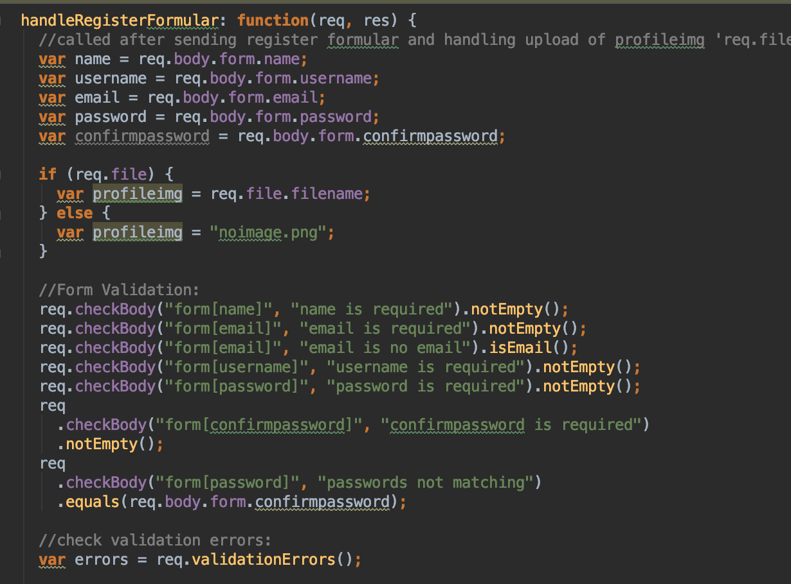 Um den Input einer Form zu überprüfen benutze ich Express-Validator Middleware die im Form-Controller (der den Form Input bearbeitet) die eingegebenen Daten überprüft, und bei invaliden Input die Seite mit Flash Alert Messages neu lädt. Im Register Formular checkt der Validator beispielsweise ob Name, email, password und username Input nicht leer sind. Ob die Email eine Email ist, Ob Password und confirmPassword übereinstimmen, Und ob der username bereits vergeben ist.
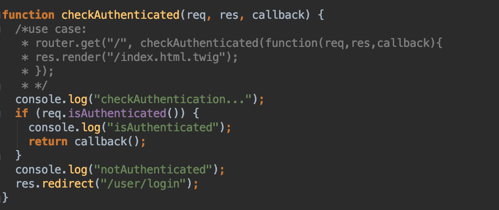 Um zu überprüfen ob der User (auch bei Wechsel von Seite zu Seite) eingeloggt ist, benutze ich Passport- sowie Express-Session Middleware. Passport ist für die Authentifikation zuständig, während Session eine User Session in den Cookies anlegt. Wenn der User sich in /login einloggt, ruft die post Methode die passport.authenticate Middleware. Diese lädt den User aus der Datenbank und checkt ob das gegebene Password dem in der Datenbank gleicht. Dabei wird ein User Objekt an das request object angelegt. Mittels req.isAuthenticated kann überprüft werden ob der User eingeloggt ist. Diese Methode wird bei jeder Route die einen eingeloggten User benötigt aufgerufen(checkauthenticated()), ist der User nicht eingeloggt, so wird er auf die Login Seite redirected.
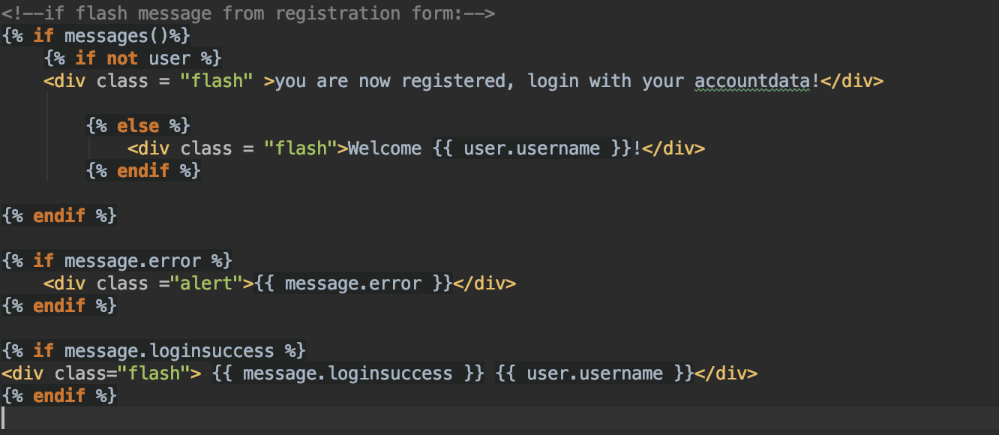 Um die Flash Messsages sowie den User auch in der Twig templating Engine zu benutzen, wird bei jeder aufgerufenen Route res.locals.user = req.user || null; , sowie res.locals.message = req.flash(); gesetzt. Dieses Objekt wird dann in der Templating engine abgefragt. Durch { if user } wird überprüft ob der User derzeit eingeloggt ist. Durch { if message.error } und div class ="alert">{{ message.error }}< wird beispielsweise die flash('error') message abgefragt und mittels alert divs angezeigt.
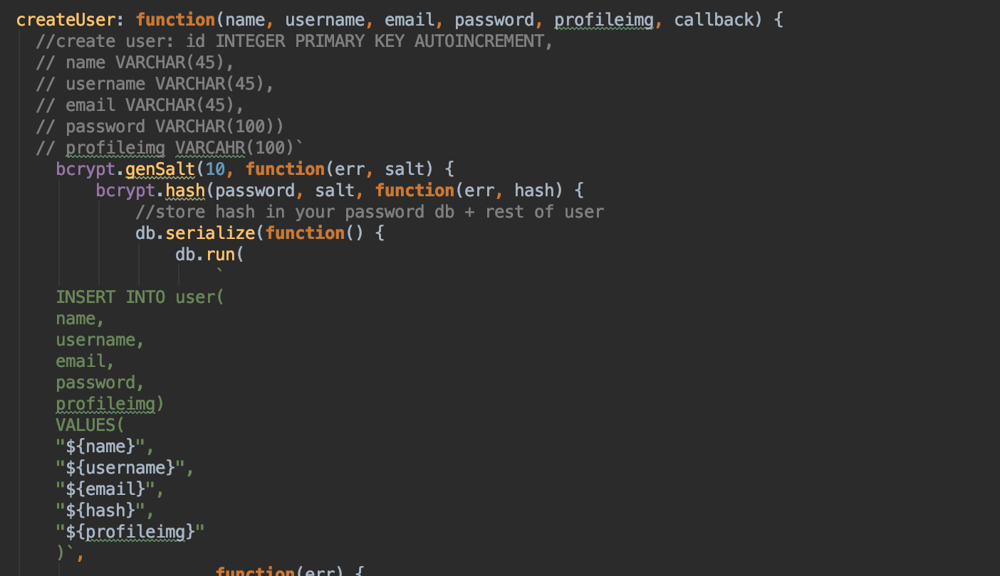 Damit die Datenbank aus Sicherheitsgründen keine Passwörter speichert, encrypte ich alle Passwörter mittels bCrypt. Es werden nur gehashte Passwörter gespeichert, sowie eingegebene und dann gehashte Passwörter mit denen der Datenbank verglichen.
Das Erste Problem ist die Erstellung der Datenbank, diese sollte komplett getrennt von der Website erfolgen, damit der Server die Datenbank nicht löschen kann. Deshalb ist dieser Teil ausgelagert in initdb.js, welches bei einmaligen ausführen die Datenbank initialisiert.
Ein weiteres Problem war das uploaden von Dateien. Für das Uploaden benutze ich Multer Middleware. Dieses hängt nach initialisieren ein
file /(s) object an das request objekt. Es benötigt dafür enctype="multipart/form-data in der post/get Methode des upload Forms.
Damit nur Bilder Hochgeladen werden können, ruft das upload Objekt Multers die filefilter funktion als Callback auf, die meine Methode checkFileType aufruft.
Diese Methode checkt den Mimetype und den extension name des request.file Objekts, und liefert true zurück, wenn es sich um "filetypes = /jpeg|jpg|png|gif/" handelt.
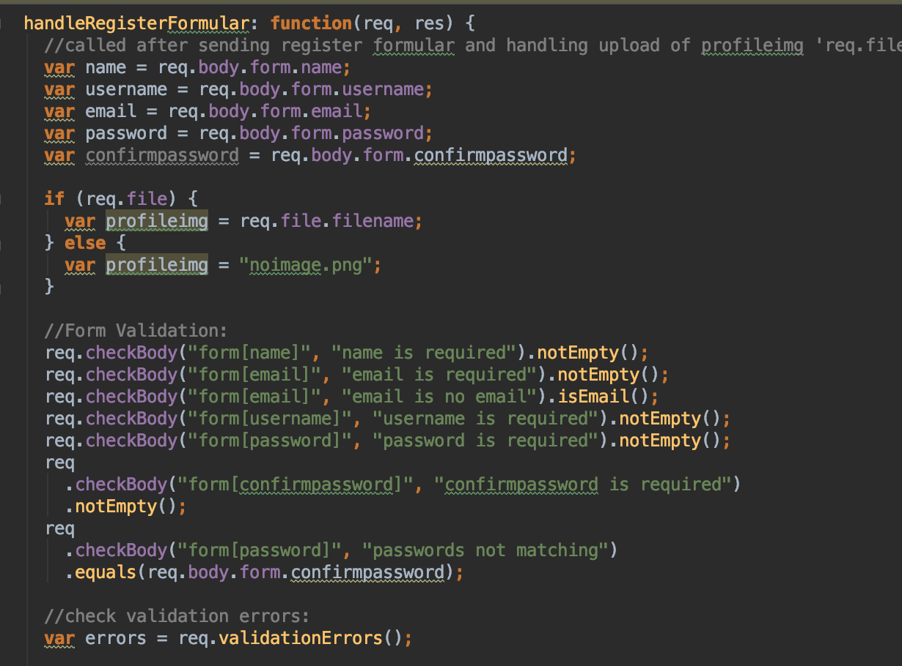 Um den Input einer Form zu überprüfen benutze ich Express-Validator Middleware die im Form-Controller (der den Form Input bearbeitet) die eingegebenen Daten überprüft, und bei invaliden Input die Seite mit Flash Alert Messages neu lädt. Im Register Formular checkt der Validator beispielsweise ob Name, email, password und username Input nicht leer sind. Ob die Email eine Email ist, Ob Password und confirmPassword übereinstimmen, Und ob der username bereits vergeben ist.
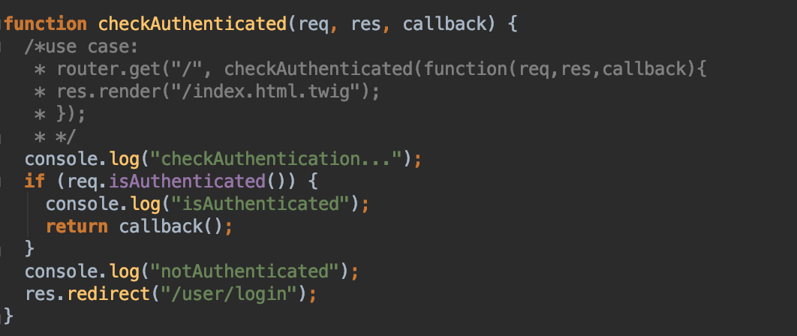 Um zu überprüfen ob der User (auch bei Wechsel von Seite zu Seite) eingeloggt ist, benutze ich Passport- sowie Express-Session Middleware. Passport ist für die Authentifikation zuständig, während Session eine User Session in den Cookies anlegt. Wenn der User sich in /login einloggt, ruft die post Methode die passport.authenticate Middleware. Diese lädt den User aus der Datenbank und checkt ob das gegebene Password dem in der Datenbank gleicht. Dabei wird ein User Objekt an das request object angelegt. Mittels req.isAuthenticated kann überprüft werden ob der User eingeloggt ist. Diese Methode wird bei jeder Route die einen eingeloggten User benötigt aufgerufen(checkauthenticated()), ist der User nicht eingeloggt, so wird er auf die Login Seite redirected.
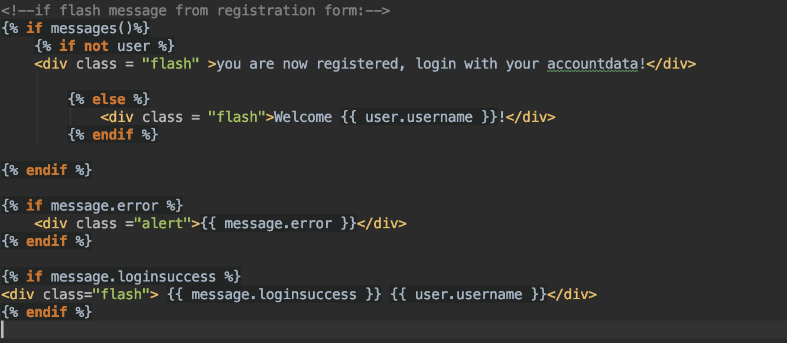 Um die Flash Messsages sowie den User auch in der Twig templating Engine zu benutzen, wird bei jeder aufgerufenen Route res.locals.user = req.user || null; , sowie res.locals.message = req.flash(); gesetzt. Dieses Objekt wird dann in der Templating engine abgefragt. Durch { if user } wird überprüft ob der User derzeit eingeloggt ist. Durch { if message.error } und div class ="alert">{{ message.error }}< wird beispielsweise die flash('error') message abgefragt und mittels alert divs angezeigt.
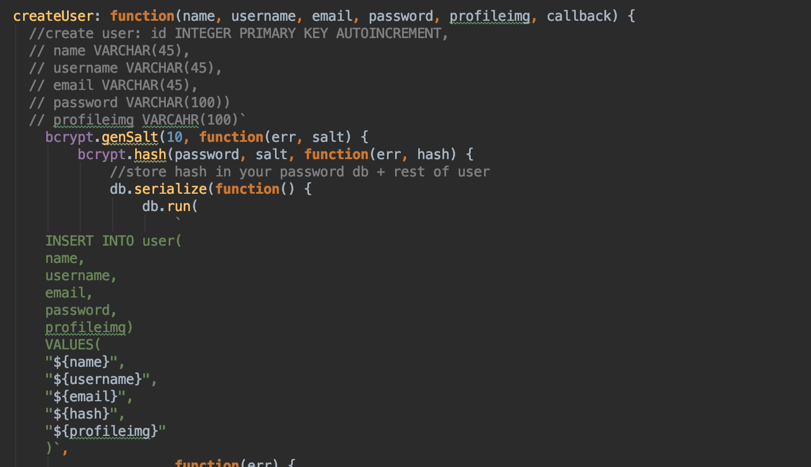 Damit die Datenbank aus Sicherheitsgründen keine Passwörter speichert, encrypte ich alle Passwörter mittels bCrypt. Es werden nur gehashte Passwörter gespeichert, sowie eingegebene und dann gehashte Passwörter mit denen der Datenbank verglichen.
-
Chapter 08:
Erklärung der Rechte
Hiermit erkläre ich das ich über alle benötigten Rechte für externe Inhalte, Bilder und Komponenten verfüge.
Alle Bilder der Website sind eigens erstellt oder von Lizensfreien Seiten wie https://unsplash.com/.
Gute vorhandene Lösungen über den Einsatz von Middleware, an denen ich mich orientiert habe, findet sich unter:
https://expressjs.com/en/guide/using-middleware.html,
http://www.passportjs.org/packages/passport-local/,
https://github.com/expressjs/multer,
https://www.abeautifulsite.net/hashing-passwords-with-nodejs-and-bcrypt,
https://www.npmjs.com/package/bcrypt,
https://flaviocopes.com/express-validate-input/
Texte der Blogpost sind von Wikipedia